OurHomeDoc
Lead Designer | Aug 2025 - Present
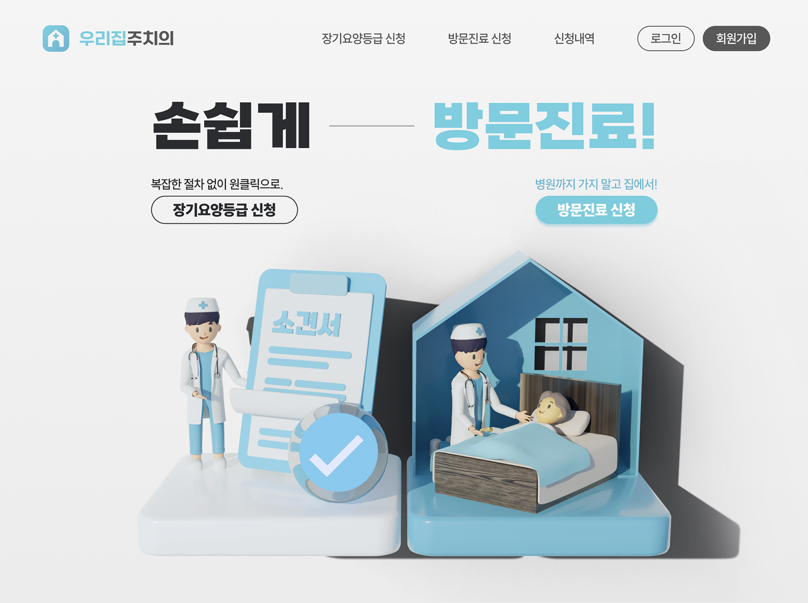Introduction
OurHomeDoc is a startup founded this year to connect home-visit medical professionals with patients, aligned with the government’s initiative to formalize home-visit medical care. The service helps expand access to treatment, especially for patients with limited mobility.
OurHomeDoc currently offers two products:
- A patient-facing website, where patients can request home-visit medical services or receive support applying for long-term care insurance grades.
- A provider-facing CRM (Customer Relationship Management) platform, which enables physicians to efficiently manage patients, appointments, schedules, and medical documentation.
First Challenge: Patient-Facing Website
“How can I design a patient-facing website that clearly communicates the key features of the service?”
Landing Page Design
The landing page is designed to be simple and straightforward. The top section features 3D graphics representing the website’s two main functions—requesting home-visit medical services and applying for long-term care insurance grades—along with direct call-to-action buttons for each.
Below this, the page offers a clear summary of the three steps involved in making a request or application, helping users understand the process at a glance and reinforcing how easy the service is to use.
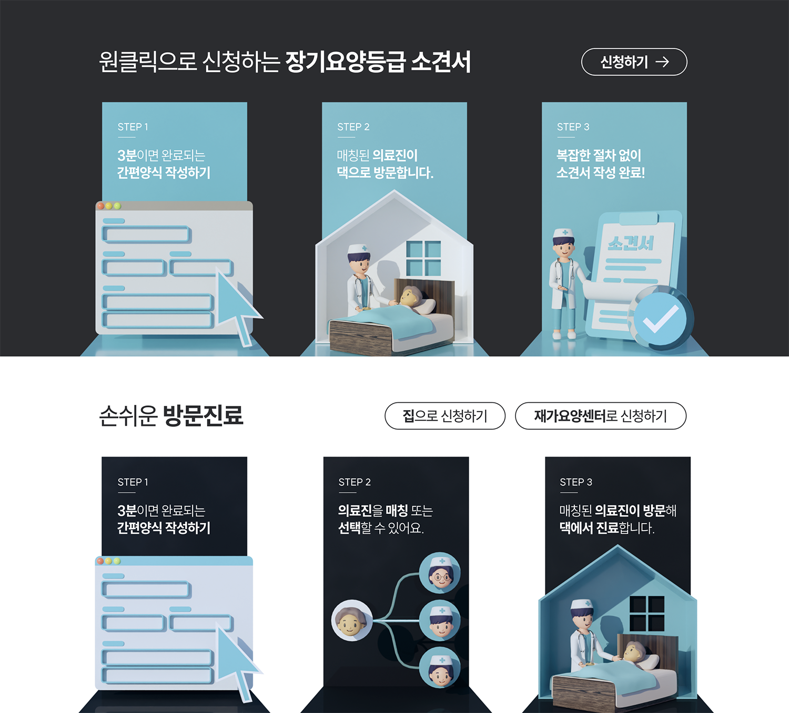Request / Application Page Design
The request and application pages were designed to give users a strong sense of control by clearly displaying their current progress.
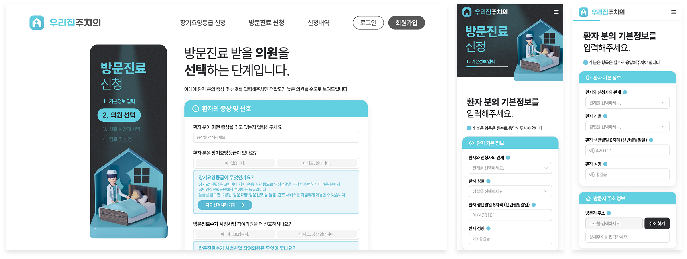On the desktop version, a progress panel on the left shows both the current step and the overall process, with navigation buttons that allow users to freely return to previous sections at any time. On mobile, the progress bar remains visible at all times to maintain the same level of clarity.
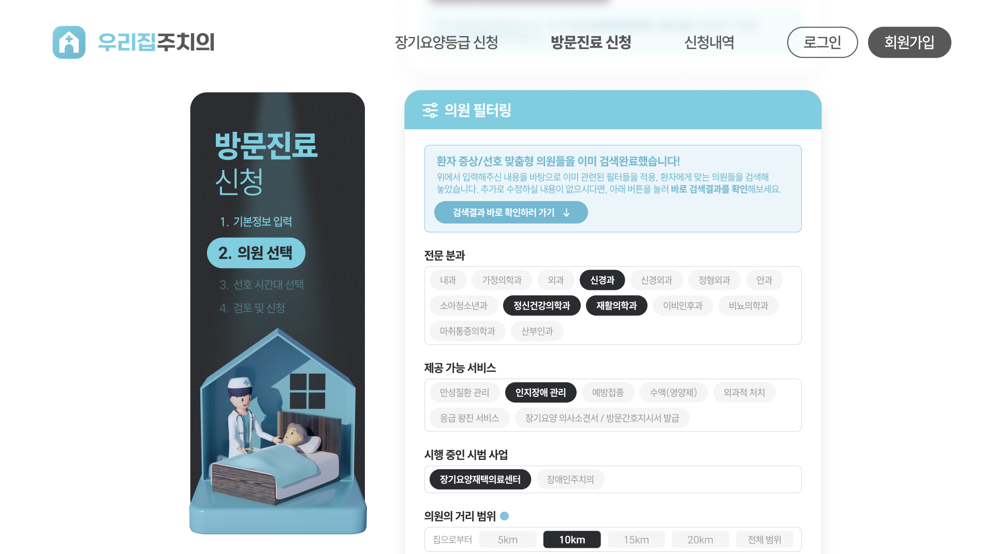The AI automatically selects filters based on the user’s symptoms. The blue button allows the user to skip the filtering step easily, once the suggestions are confirmed.
User convenience is prioritized throughout the experience. For example, when users search for medical centers to request treatment, they can simply enter their symptoms, and the AI automatically chooses relevant tags for the search. This makes the selection process faster, easier, and more intuitive.
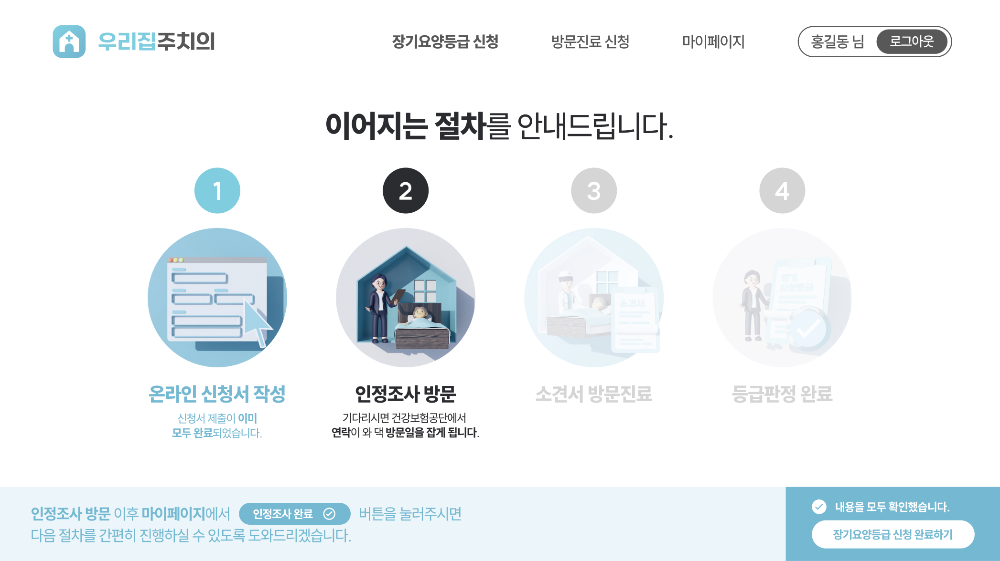Once the application for long-term care insurance grades is completed, the website clearly outlines the next steps. Because this section provides important instructions on what users need to do afterward, they can proceed only after confirming the information with a checkbox.
Second Challenge: CRM
“How can we effectively assist medical professionals manage their patients, schedules, and documentation?”
Dashboard Page
The dashboard highlights the most important information at a glance. It displays upcoming appointments, patients waiting to be scheduled, patients with incomplete payments, and documents that are recommended for completion.
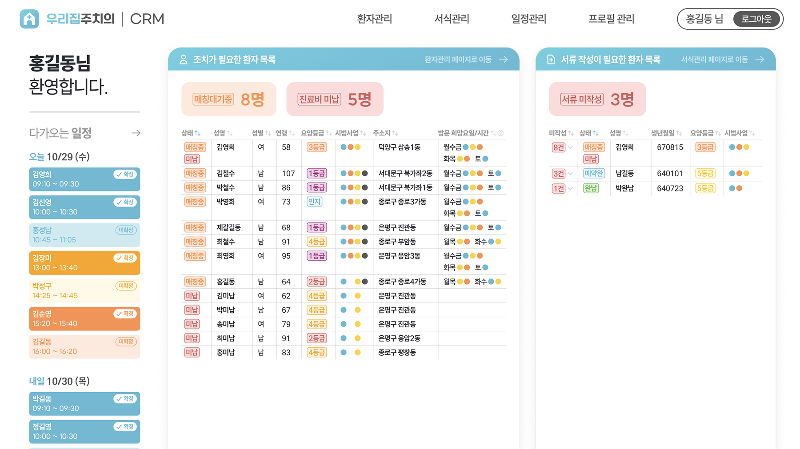Schedule Management Page
The schedule management page helps users find the right time slots where both the user(medical professional) and the patient are available, while also accounting for travel time between appointments.
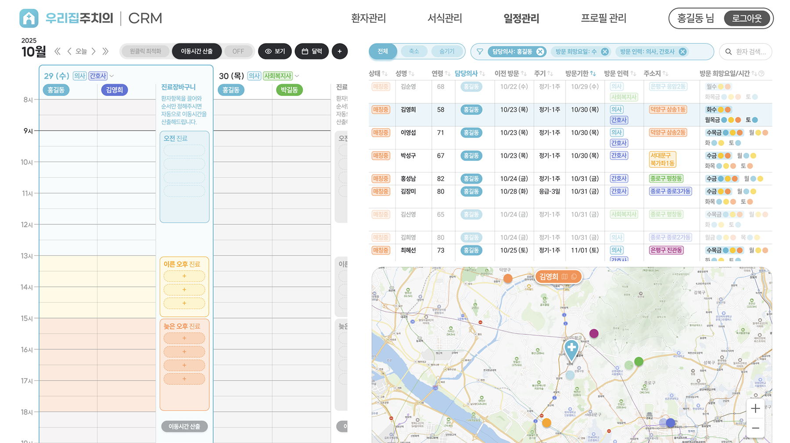When the user clicks on a patient entry, the patient’s available time slots are highlighted in the schedule, and their location is emphasized on the map. Clicking on a specific date filters the list to show only patients available on that day.
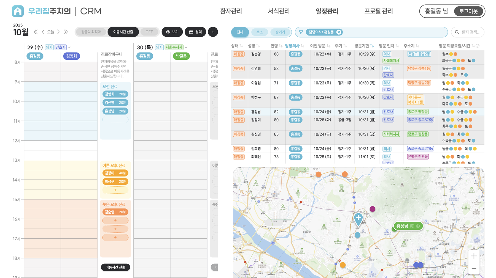One of the biggest needs identified among home-visit doctors is minimizing travel time. The schedule management page addresses this through an automatic optimization feature. Users can drag patient entries into separate “carts,” and the system calculates the optimal visiting order based on travel time between locations.
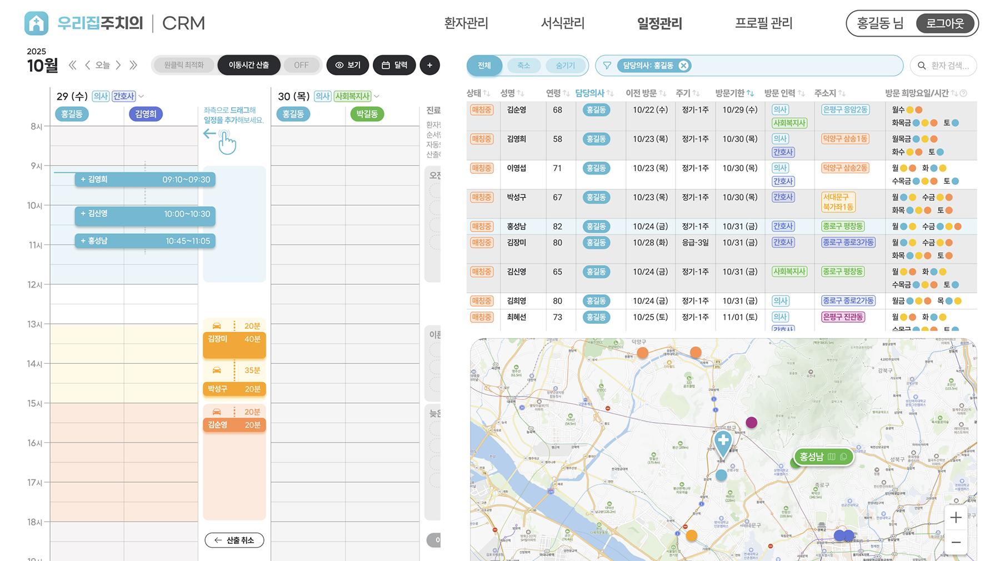Once the optimization is complete, the user can simply drag the optimized blocks into the calendar—and the schedule is set.
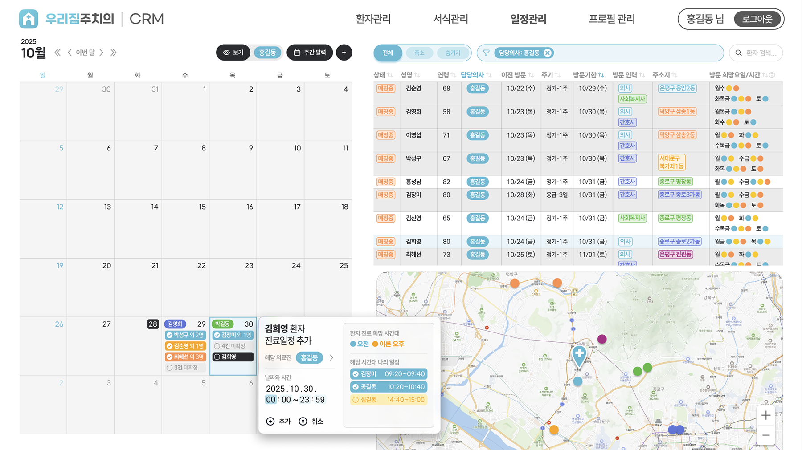Users can also switch to a monthly calendar view if they prefer a more macroscopic overview. When adding a schedule, the patient’s preferred visit time and the user’s existing schedule are displayed together, enabling more efficient and informed planning.
Patient Management Page
The patient management page is designed to be intuitive. Selecting a patient from the table on the left displays key information in the top-right panel and detailed information in the bottom-right panel.
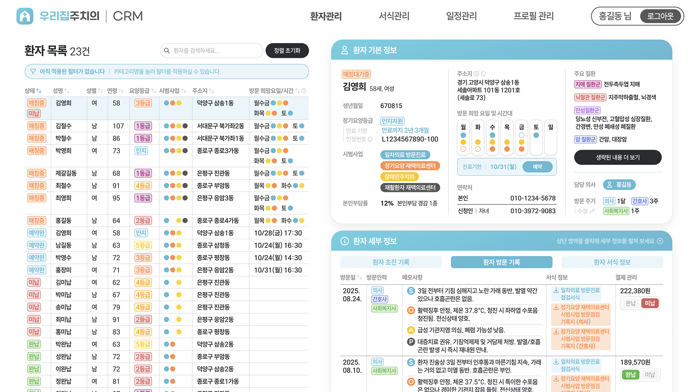To convey complex data within a limited table space, information is color-coded. Related health policy categories are shown in blue, orange, yellow, and gray. Preferred visit days & times are also color-coded: morning in blue, early afternoon in yellow, and late afternoon in orange. The user(medical professional)’s availability is indicated with filled circles for available slots and hollow circles for unavailable ones.
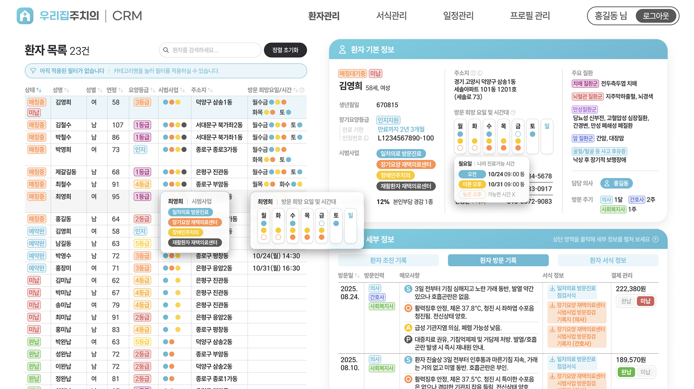Hover interactions reveal tooltips showing details or explaining what each color represents, enabling a compact yet clear presentation of information.
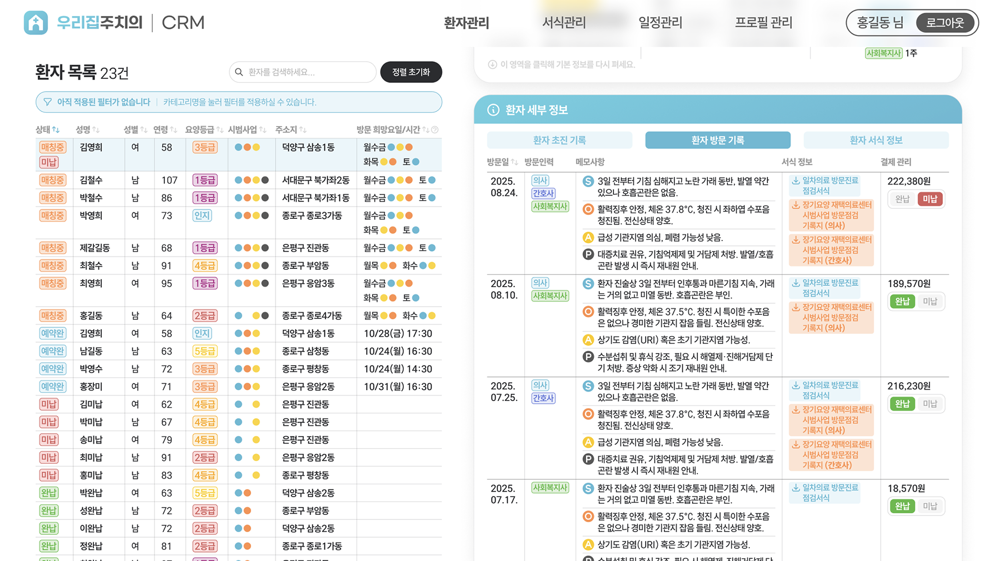Users can flexibly adjust how much information they see. The detailed information section can be expanded or collapsed, allowing users to focus on either high-level summaries or more granular details as needed.
Document Management Page
The document management page organizes files effectively by displaying each document’s category and its related healthcare policy.
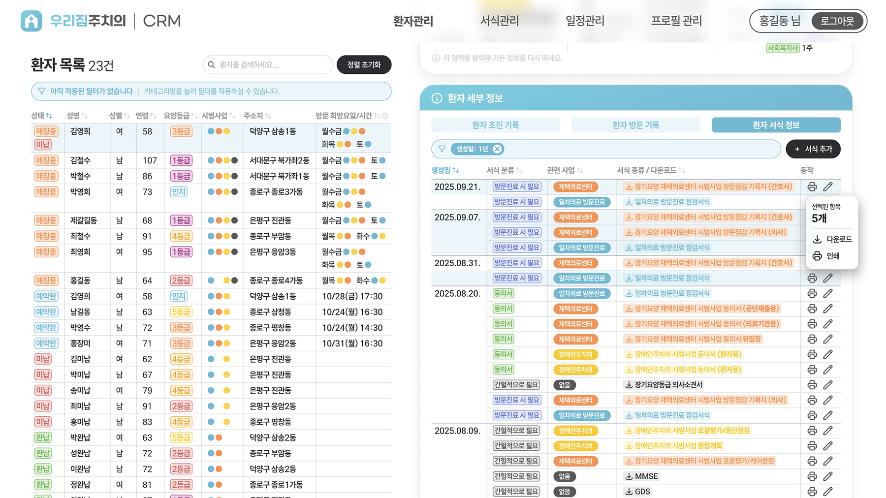Users can select multiple documents to download or print at once.
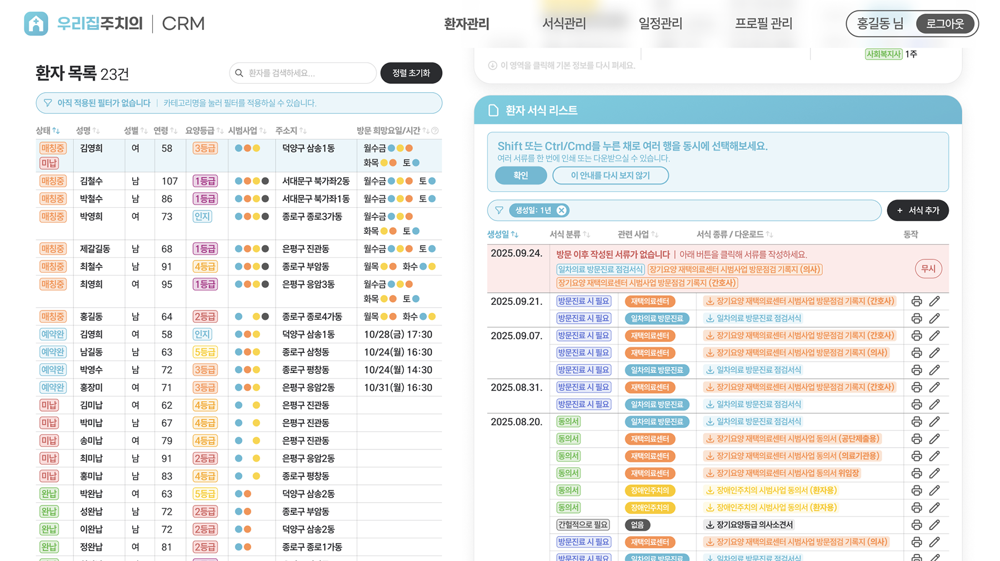The page also prompts users to add any missing documents if none were uploaded after a visit.